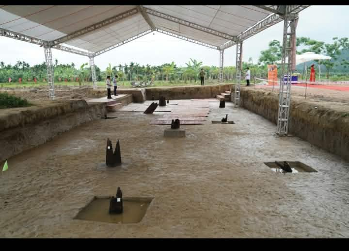
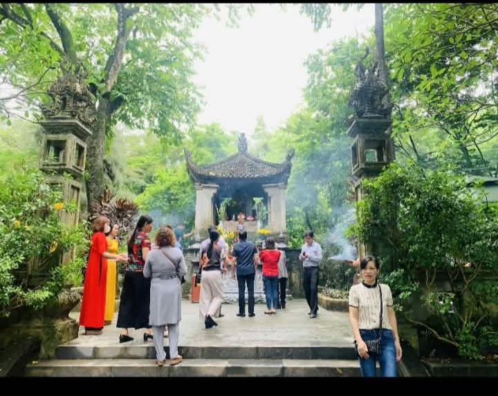

01. Tác động chính trị
Chiến thắng năm 938 tạo điều kiện quan trọng để người Việt củng cố quyền tự chủ. Năm 939, Ngô Quyền xưng vương và chọn Cổ Loa làm kinh đô, thể hiện bước chuyển từ chiến thắng quân sự sang xây dựng chính quyền độc lập.
NHỮNG CON NGƯỜI LÀM THAY ĐỔI THẾ GIỚI
Từ chiến thắng Bạch Đằng năm 938 đến bước phát triển của chính quyền tự chủ, Ngô Quyền đã để lại dấu ấn quan trọng trong lịch sử dân tộc.
Ngô Quyền (898–944) là một nhân vật có vai trò đặc biệt trong lịch sử Việt Nam. Năm 938, ông lãnh đạo quân dân ta đánh bại quân Nam Hán trên sông Bạch Đằng. Chiến thắng này tạo bước ngoặt quan trọng trong quá trình giành lại và củng cố nền độc lập, tự chủ của dân tộc.
Năm 939, Ngô Quyền xưng vương và chọn Cổ Loa làm kinh đô. Tác động của ông không chỉ thể hiện ở chính trị và quân sự mà còn ở tinh thần yêu nước, ý chí tự chủ và những bài học lịch sử được truyền lại cho các thế hệ sau.
Chiến thắng năm 938 tạo điều kiện quan trọng để người Việt củng cố quyền tự chủ. Năm 939, Ngô Quyền xưng vương và chọn Cổ Loa làm kinh đô, thể hiện bước chuyển từ chiến thắng quân sự sang xây dựng chính quyền độc lập.

Trận Bạch Đằng cho thấy khả năng nghiên cứu địa hình, tính toán thời cơ và tổ chức trận địa của Ngô Quyền. Cách đánh sáng tạo góp phần tạo nên thắng lợi trước quân Nam Hán, trở thành dấu mốc nổi bật trong lịch sử quân sự Việt Nam.

Chiến thắng góp phần củng cố niềm tin vào khả năng tự bảo vệ đất nước của người Việt. Tinh thần đoàn kết, lòng yêu nước và ý chí bảo vệ chủ quyền trở thành những giá trị được nhắc lại qua nhiều thế hệ.
Tên tuổi Ngô Quyền được lưu truyền trong lịch sử, giáo dục và đời sống văn hóa. Câu chuyện về ông giúp thế hệ trẻ hiểu hơn về truyền thống dựng nước, giữ nước và trách nhiệm gìn giữ di sản dân tộc.
Quân Nam Hán bị đánh bại, tạo bước ngoặt quan trọng trong tiến trình khẳng định nền độc lập, tự chủ của người Việt.
Ngô Quyền xưng vương và đóng đô ở Cổ Loa, thể hiện bước phát triển từ thắng lợi quân sự sang xây dựng chính quyền của người Việt.
Chiến thắng Bạch Đằng trở thành một dấu mốc quan trọng trong ký ức lịch sử dân tộc. Những chiến thắng trên sông Bạch Đằng về sau cũng làm nổi bật vị trí của dòng sông này trong lịch sử quân sự Việt Nam.
Nếu không có Ngô Quyền, lịch sử Việt Nam có thể đã diễn ra theo một hướng khác, dù không thể khẳng định chính xác điều gì sẽ xảy ra. Năm 938, quân Nam Hán tiến vào nước ta trong bối cảnh tình hình chính trị còn bất ổn. Ngô Quyền đã chủ động tổ chức kháng chiến và giành chiến thắng trên sông Bạch Đằng. Nếu thiếu sự lãnh đạo của ông vào thời điểm đó, cuộc kháng chiến có thể gặp nhiều khó khăn hơn, kéo dài hơn hoặc gây ra tổn thất lớn hơn. Tuy nhiên, không thể kết luận rằng người Việt chắc chắn sẽ mất độc lập mãi mãi, bởi lịch sử còn phụ thuộc vào nhiều nhân tố và sự đấu tranh của nhiều thế hệ.
Đóng góp nổi bật của Ngô Quyền là biết tận dụng địa hình sông Bạch Đằng, thủy triều và sự phối hợp của quân dân để tạo lợi thế trước đối phương. Chiến thắng ấy tạo điều kiện quan trọng để ông xưng vương năm 939 và xây dựng chính quyền tự chủ. Nếu không có bước ngoặt này, quá trình hình thành chính quyền độc lập có thể đã gặp thêm trở ngại hoặc diễn ra vào một thời điểm khác. Điều đó cũng có thể ảnh hưởng đến những lựa chọn chính trị và quân sự của các thế hệ kế tiếp.
Ở phạm vi rộng hơn, lịch sử và bản sắc của Việt Nam có thể đã phát triển theo một con đường khác. Giá trị của Ngô Quyền không nằm ở việc cho rằng một cá nhân quyết định toàn bộ lịch sử, mà ở chỗ ông đã tạo ra một bước ngoặt có ảnh hưởng sâu rộng. Cần ghi nhận vai trò của ông đồng thời tôn trọng sức mạnh của nhân dân và những điều kiện lịch sử đã góp phần tạo nên chiến thắng.
Theo nhóm, tác động lớn nhất của Ngô Quyền là góp phần mở ra bước phát triển mới trong tiến trình độc lập, tự chủ của Việt Nam. Chiến thắng Bạch Đằng không chỉ đánh bại một cuộc xâm lược mà còn tạo cơ hội để người Việt xây dựng chính quyền của mình.
Thành tựu của một nhân vật lịch sử luôn gắn với sự đóng góp của nhân dân và hoàn cảnh của thời đại. Vì vậy, tìm hiểu Ngô Quyền cũng là cách để chúng ta hiểu rõ hơn sức mạnh đoàn kết của dân tộc Việt Nam.